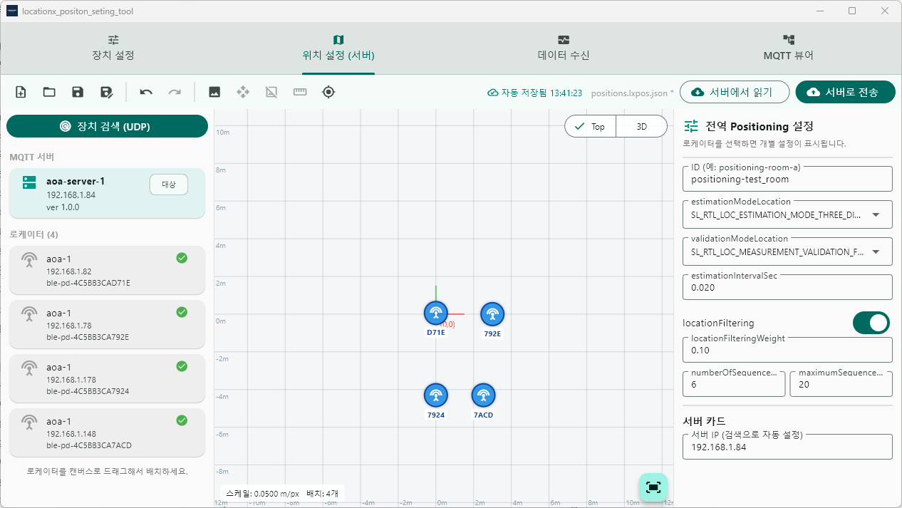
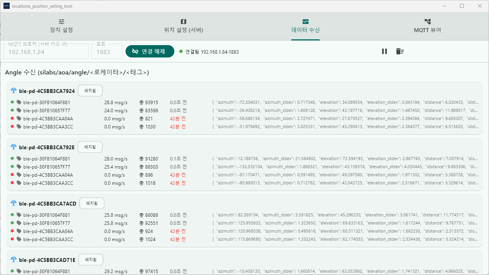
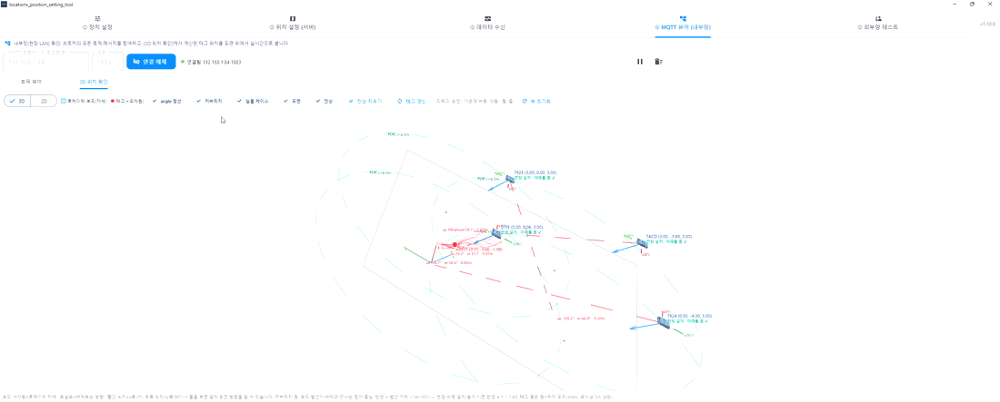
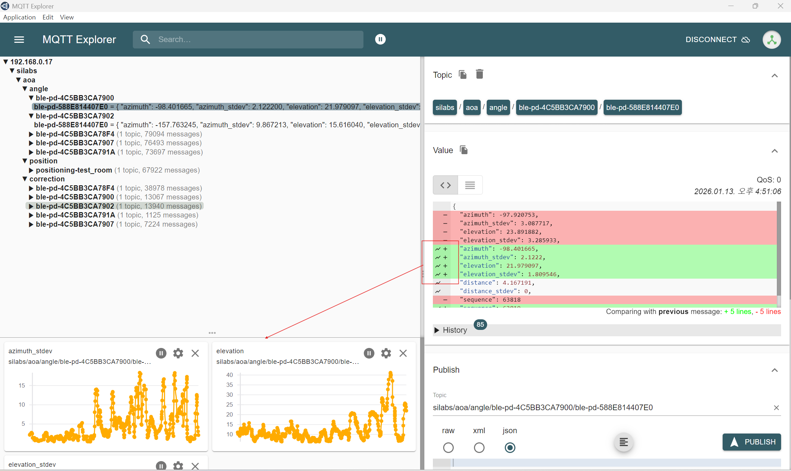

1System Configuration
System Diagram
Locators receive the BLE signal from tags, the MQTT server computes positions via the PoE switching hub, and a PC handles configuration and monitoring.

Hardware Components
- Network router
- Position server card — Raspberry Pi, hostname
aoa-server-1(MQTT broker + position engine) - PoE switching hub
- LocationX locator
CB-AOAAOD-L-POE2601(4×4 URA antenna) - BLE tags
CB-AOAAOD-Tag-Hart/CB-AOAAOD-Tag-Motion

Software
| Software | Purpose | Notes |
|---|---|---|
| LocationX Position Setting Tool | Device discovery · locator placement on a floor plan · pushing settings to the server · verifying data reception | Required (Windows) — GitHub |
| MQTT Explorer | Monitoring raw MQTT messages | Optional — mqtt-explorer.com |
Network Layout
| Component | IP address | Port |
|---|---|---|
| Router admin page | 192.168.0.1 (typical default) | - |
| Position server card (MQTT broker) | DHCP assigned — find it with [Discover Devices] in the setting tool | 1883 |
| Locators | DHCP (automatic) | - |
2Installation — Initial Setup
Setup Order
- Start the router — the admin page is at
192.168.0.1for a typical router - Start the position server (MQTT server) — it runs automatically once the server card is powered on
- Connect the locators — plug them into the PoE switching hub with LAN cables
Locator Installation (Initial Setup)
For the initial setup, install the locators as shown below and verify operation. Mount the locators on the ceiling (recommended height: about 3 m) with the antenna face pointing toward the floor.


3Position Setup — LocationX Position Setting Tool
A Windows desktop tool that discovers locator cards on the LAN, lets you place them on a floor plan by drag & drop, and updates the positioning configuration on the server. Download it from GitHub Releases.
3-1. Discover Devices
- Launch the tool, open the Position Setup (Server) tab, and click [Discover Devices (UDP)].
- The MQTT server card and all locators on the same network are discovered automatically and listed in the left panel.
- The server card's IP address is set as the target server automatically.
3-2. Prepare the Floor Plan
- Load floor plan — select a floor plan image (png/jpg).
- Scale calibration — click two points with a known real-world distance on the plan and enter the distance in meters.
- Set origin — click the position to use as world coordinate (0,0).
3-3. Place the Locators
- Drag locators from the right-hand list onto the canvas at their actual installed positions (default mounting height z = 3.0 m).
- Click a marker to edit its coordinates, orientation, and detailed AoA settings in the left panel.
- Global positioning settings (estimation mode, filtering weight, etc.) are adjusted in the right panel.

3-4. Deploy to the Server
- Click [Deploy to Server] — the changes (diff) are displayed for review.
- Confirm to apply: the server card's
positioning_config.jsonis updated and the position engine restarts automatically. - Save the project (
.lxpos.json) to keep the floor plan, calibration, and placement locally.
3-5. Verify Data Reception
In the Data Reception tab, connect to the MQTT broker to see the per-locator angle
streams (silabs/aoa/angle/<locator>/<tag>) in real time. Turn on a tag
and you can immediately check the message rate (msg/s) and the azimuth / elevation values.

3-6. Verify Positions
Once placement is complete, check the computed tag positions on the floor plan in the top view / 3D view.

Device Settings Tab — Locator Management
- LED identify — blinks the selected locator's LED to find the physical device on site
- Restart AoA service — applies changes such as a new MQTT server address to the locator
- Reboot device — restarts the locator remotely
- Status web page — check the locator's UART reception, CPU temperature, broker connection, and AoA angle graph in a browser (
http://<card IP>:8080)
4Verifying MQTT Data (MQTT Explorer)
Use MQTT Explorer when you want to inspect the raw MQTT messages directly.
- Launch MQTT Explorer and click +Connections to set up an MQTT connection.
- Name:
aoa-server-1 - Protocol:
mqtt:// - Host:
<server card IP>(found via device discovery in the setting tool) - Port:
1883
- Name:
- Open ADVANCED, set the topic to
#only, and go back with BACK. - Click CONNECT to connect to the MQTT broker.
- You can confirm data is being received, including the azimuth and elevation values.

Received Data Fields
| Field | Description |
|---|---|
azimuth | Azimuth (horizontal angle) of the tag signal relative to the locator (antenna array) |
azimuth_stdev | Standard deviation of the azimuth measurement |
elevation | Elevation (vertical angle) of the tag signal |
elevation_stdev | Standard deviation of the elevation measurement |
# Angle (locator → broker) silabs/aoa/angle/<locator_id>/<tag_id> { "azimuth": 42.1, "azimuth_stdev": 1.3, "elevation": -35.6, "elevation_stdev": 2.0 } # Position (position engine → broker · in meters) silabs/aoa/position/<tag_id> { "x": 2.41, "y": -1.02, "z": 1.20 }